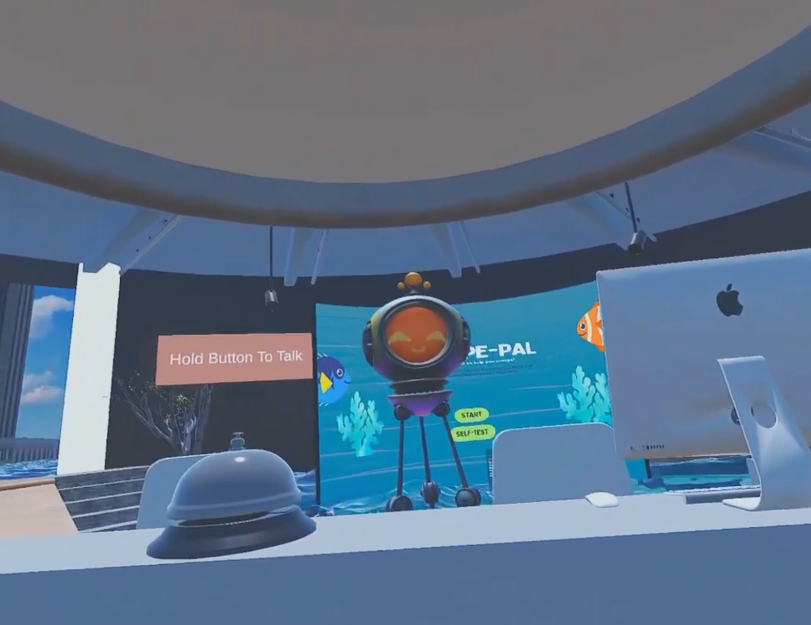
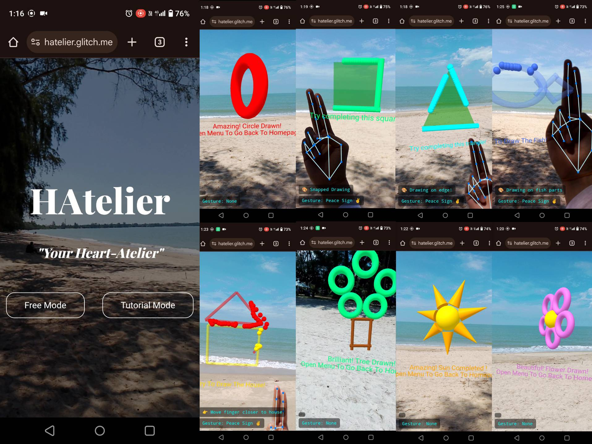
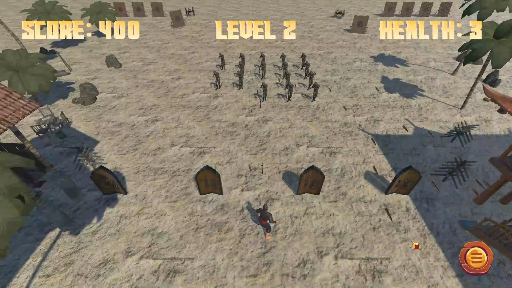
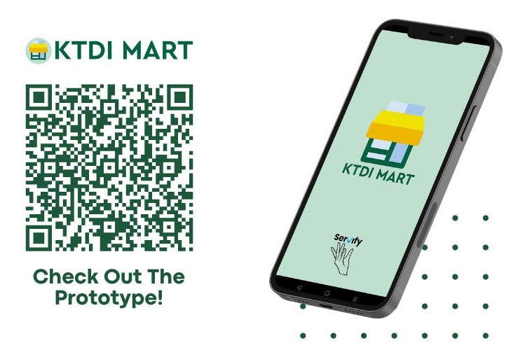
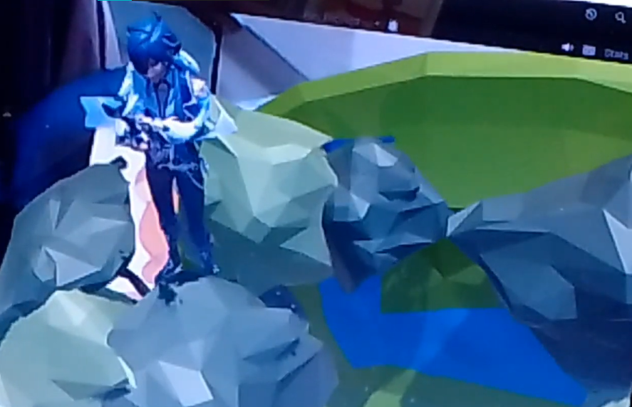
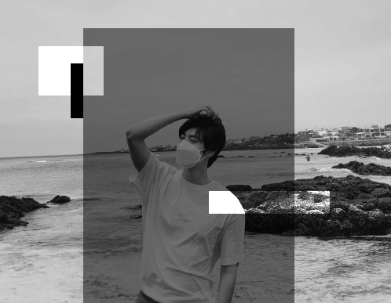
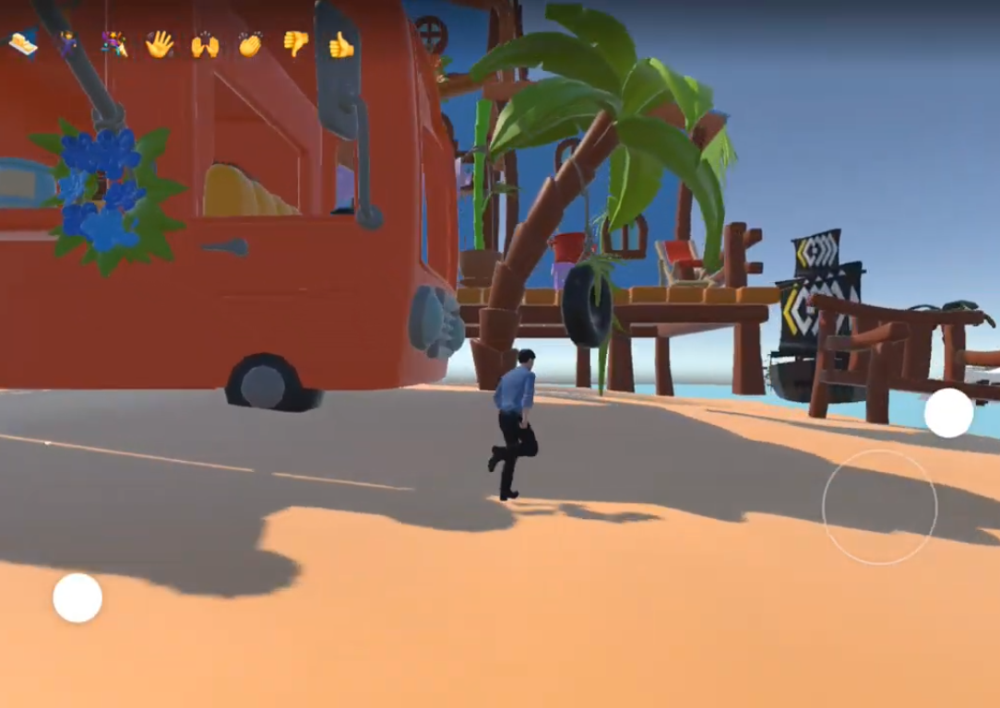
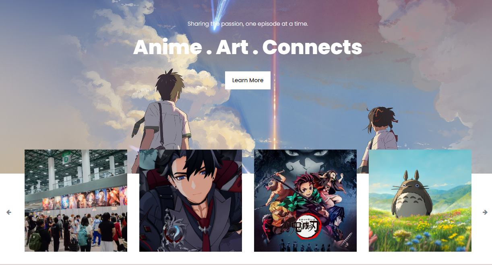

[ Past Projects ]

EscapePal (DICE 3.0)
An award-winning "VR Training Experience For Escaping A Sinking Car With An Artificial Intelligence Companion" project built for the
DICE 3.0 (Digital Innovation & Creativity Exhibition) competition hosted by MOHE and UniSZa.
EscapePal is designed to enhance water safety preparedness by simulating real-life emergency situations where vehicles become submerged.
HAtelier
HAtelier is an interactive real-time 3D drawing guide using hand gestures in WebAR, built to redefine how people interact,
learn, and create in augmented reality. The idea began with a simple question: what if we could draw in the air, in real time,
using just our hands and a web browser?
That question became the foundation for HAtelier — a platform where users can experience gesture-based drawing directly through
their phone’s camera, without needing to install any app. Just open it in your browser, and the world becomes your canvas.


Keris Warrior
A fast-paced action game inspired by the timeless classic Space Invaders, reimagined through the lens of Malaysian culture and heroism. Built with Unity, Keris Warrior blends modern arcade combat with traditional elements, inviting players to defend their homeland using the mystical power of the keris, an ancestral weapon symbolic of bravery and identity.
More DetailsKTDI Mart
A mobile application developed by Servify, focusing on providing a convenient platform for customers of KTDI Mart to access information about the mart's availability and products, as well as to make product requests directly to the mart's owner from their smartphones. It is a project for Application Development subject.
More Details

Real-Time
Computer Graphics
Compilation of assignments completed during the Real-Time Computer Graphics subject, consisting:
- WebVR using Glitch.com
- Hologram using MagicaVoxel + Mixamo + Unity
- Marker-based AR using Vuforia + Unity
Image Processing
Various samples of image processing done using Python and OpenCV, throughout my university assignments, including:
- Image Thresholding
- Image Manipulation
- Laplacian Filter
- Unsharp Masking
- Image Segmentation


Game Development
-
Keris Warrior (Unity):
A localization of the classic Space Invaders game. -
Nazomeita (Scratch):
A visual novel game packed with different mini games as player play along the story. -
Not Expedia (Spatial.io + Unity):
A simple third-person game developed during RTCG subject to demonstrates multiplayer function.
AnimeXhibition
A website built for Multimedia Web Programing Mini Project; Digital Communities - RIA (Rich Internet Application) online platform that brings together people with shared interests. The project implements JQuery, AJAX and Jikan.moe API.
More Details
Diploma Portfolio
Compilation of my previous projects during diploma:
- Different websites built using Wix
- Product Trend Analysis System (PTAS) Vb.net
- Simple Login page using Android Studio
- Web Programming